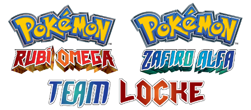
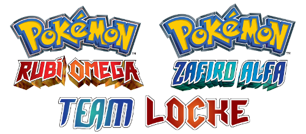

La forma de ganar este Teamlocke es logrando la máxima puntuación individual y/o grupal (puedes ganar individualmente, grupalmente o ambas). En los siguientes listados se recoge la forma de obtener puntos y la cantidad obtenida según la acción que se realice.
| Puntos obtenidos | Forma de obtenerlos |
|---|---|
| +1 | Vence al Alto Mando antes que cualquier otro aspirante de cualquier Equipo. |
| Puntos obtenidos | Forma de obtenerlos |
|---|---|
| +1 | Captura a Groudon o Kyogre antes que el otro Equipo capture a Kyogre o Groudon (basta con que lo haga uno del mismo Equipo). |
Las ventajas son de un solo uso y solo puedes obtenerlas una vez durante el desafío. Puedes usarlas cuando quieras, o no usarlas en absoluto. En la tabla, observarás que en la columna de Puntos requeridos, la cantidad estará acompañada de la letra "i" o "g", lo cual indica el tipo de puntos requeridos (individuales o grupales). Por ejemplo, la ventaja "Revivir Aspirante" requiere que tengas al menos 40 i puntos, esto es, 40 puntos individuales.
| Puntos requeridos | Ventaja | Descripción |
|---|---|---|
| 40 i | Revivir Aspirante | Te permite revivir a un compañero cuyo equipo Pokémon cayó en combate y así poder continuar ganando puntos individuales. |
8 de abril de 2020